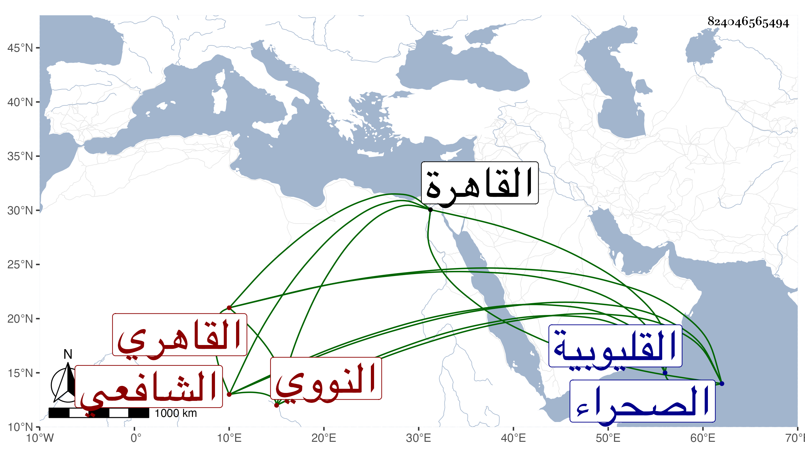

0902Sakhawi.DawLamic.ITO20230111-ara1.EIS1600.824046565494
Biography ID: 824046565494
273
عمر بن حسن بن عمر بن عبد العزيز بن عمر السراج النووي ثم القاهري الشافعي والد البدر محمد الآتي ولد تقريبا بعيد العشرين بنوى من القليوبية وحفظ بها القرآن والعمدة ثم قدم القاهرة فنزل عند أبي البركات الغراقي لكونه كان زوجا لقريبة له بتربة الأشرف برسباي فأتقن عنده حفظ العمدة ثم حفظ المنهاج الفرعي والأصلي وألفية النحو وعرض على شيخنا والمحب بن نصر الله الحنبلي وابن الديري وغيرهم وزوجه أبو البركات ابنته ولازمه في الفقه والفرائض والحساب والعربية والبوتيجي في الفرائض والحساب وعثمان المقسي في الفقه وأصوله ، وكذا مع العربية الجوجري وأبا السعادات في الفقه والعربية وغيرهما بل سمع عليه البخاري ومسلما والعلم البلقيني وزكريا في الفقه ومما أخذه عن ثانيهما شرحه لروض وحضر تقسيم التنبيه عند المناوي والكثير من شرح المنهاج عند مصنفه المحلي وأكثر من ملازمة الجلال البكري في الفقه والحديث وأخذ عن كريم الدين العقبي في النحو والصرف والمنطق ، وسمع على شيخنا في سنة إحدى وخمسين في المحامليات وأسمع معه ولدا له كان اسمه محمدا أيضا وتكسب بالشهادة على خير واستقامة مع بعض جهات الصحراء وغيرها ثم ولاه زكريا القضاء ، وحج في أثناء ذلك قارنا فاستأنست برؤيته .
